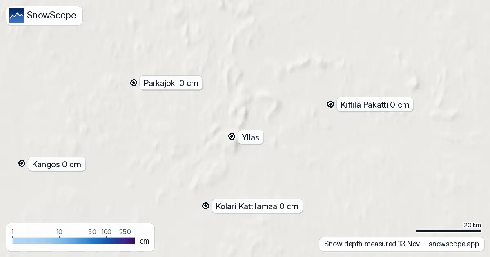

Snøforhold i Ylläs: bar bakke i Lappland, rundt 23 cm på vei (14. november 2026)
Vest-Lappland er uvanlig brunt til å være midt i november. Morgenen 13. november målte værstasjonene rundt Ylläs 0 cm i Kolari Kattilamaa (175 m, 23 km unna), 0 cm i Kittilä Pakatti, 0 cm i Muonio og bare 2 cm i Kittilä Kenttärova, den høyeste av dem på 351 m. En vanlig 14. november i våre 46 vintrer har rundt 18 cm i Ylläs. Den gode nyheten er uka som kommer.
Se snøprognosen for Ylläs direkte i SnowScope-appenSnødybde, puddervarsler og 3D-kartet, gratis.
Hvor ble snøen av?
Vårt anslag for nysnø de siste sju dagene er under 1 cm, så det er liten grunn til å tro at det ligger mye mer på fjellene enn ved stasjonene. Og stasjonene er tydelige: hele området mellom Kolari, Muonio og Kittilä var snøfritt 13. november, bortsett fra et tynt lag på det høyeste punktet.
Dette er sjeldent. I våre tall er bakken i Ylläs hvit 14. november i 99 % av vintrene, og én vinter av ti har fortsatt 6 cm den datoen. I år ligger det under selv det lave nivået.

Uka som kommer gir ordentlig snø
Vi venter rundt 23 cm de neste sju dagene. De andre prognosene vi sammenligner med, er litt høyere, fra 27 til 38 cm. De er enige om at det holder seg kaldt: ikke noe regn i det hele tatt, og snø ned til de laveste dalene. Det er nok til å dekke fjellene ordentlig for første gang denne sesongen.
Slik ser en normal vinter i Ylläs ut
Våre 46 tidligere vintrer gir en vanlig snødybde på 24 cm 21. november, 30 cm 30. november og 39 cm 15. desember. En middels vinter topper seg på rundt 81 cm, og bakken holder seg hvit i omtrent 209 dager. I motsetning til Sør-Finland har Ylläs ikke mistet snø i løpet av tidsserien: største snødybde i en middels vinter var 81 cm de første 15 vintrene og 83 cm de siste 15.
Når bakkene åpner
Skisenterets egen forside sier at det er stengt nå og åpner 21. november, og snøkanonene er i gang. Åpningen bygger på produsert snø i hovednedfartene; det ventede snøfallet hjelper, men gir ikke et fullt naturlig underlag innen da.
Tips til skiløpere
- Langrennsløyper på naturlig snø trenger det meste av ukas snøfall før de blir gode; regn med tidlige løyper på produsert snø først.
- Med bar bakke under 20 cm nysnø betyr kjøring utenfor de preparerte bakkene stein og frossen mark rett under.
- Dagene er allerede korte her: legg tiden ute rundt midt på dagen.
Flere kart (eksterne nettsteder)
Referanser og kilder
- Meteorologisk institutt i Finland (FMI), åpne data (CC BY 4.0) en.ilmatieteenlaitos.fi/open-data
- SMHI, åpne data: daglig snødybde på svenske værstasjoner www.smhi.se/data/meteorologi/ladda-ner-meteorologiska-observationer
- Ylläs Ski, offisiell side: åpningsdatoer og heisstatus, lest 2026-11-13 ski.yllas.fi/
Om tallene
Målt snø: morgenmålinger 13. november 2026 ved de offisielle værstasjonene i Sverige (SMHI åpne data), Finland (FMI åpne data, CC BY 4.0) og Norge (MET Norways stasjonsrapporter, CC BY 4.0, publisert av Ogimet). Norges nasjonale snøkart seNorge (NVE og MET Norway, NLOD) gir anslagene på et rutenett på 1 km for bakkene. Våre tall: SnowScopes prognose for de neste sju dagene i tre høyder i skisenteret, sammenlignet med uavhengige prognoser (ECMWF, ICON, GFS, GEM) for 14. til 20. november; snøhistorikk for 46 tidligere vintre (1980-81 til 2025-26), en modell av fortiden korrigert for høyde. Åpningsdatoer: skisentrenes egne sider, lest 13. november 2026. Løypelengde og antall heiser: kartlegging i OpenSkiMap.
Offisielle snøskredvarsler: EAWS – European Avalanche Warning Services
Siter denne rapporten
For forskning, undervisning eller presse: tallene og diagrammene kan brukes fritt under CC BY 4.0 med denne kildehenvisningen.
SnowScope (2026), Snøforhold i Ylläs: bar bakke i Lappland, rundt 23 cm på vei (14. november 2026), https://snowscope.app/blog/nb/2026/11/yllas-snow-conditions-14-november-2026.html, hentet 2026-11-14
SnowScope (Atlas Labs). (2026, November 14). Snøforhold i Ylläs: bar bakke i Lappland, rundt 23 cm på vei (14. november 2026). SnowScope snow reports. https://snowscope.app/blog/nb/2026/11/yllas-snow-conditions-14-november-2026.html
BibTeX
@misc{snowscope2026yllassnowconditions14nov,
author = {{SnowScope (Atlas Labs)}},
title = {Snøforhold i Ylläs: bar bakke i Lappland, rundt 23 cm på vei (14. november 2026)},
year = {2026},
month = nov,
howpublished = {\url{https://snowscope.app/blog/nb/2026/11/yllas-snow-conditions-14-november-2026.html}},
note = {Published 2026-11-14 13:29 UTC; accessed 2026-11-14}
}· CC BY 4.0 · Metoder, data og verktøy →
Ylläs: snø og temperatur etter høyde, i vinter sammenlignet med i fjor (verktøy) →
Følg Ylläs
Gratis: en melding når nysnø er på vei, og prognosen hver morgen.
Flere snørapporter

Husky og hund i Rovaniemi vinteren 2026-27: værstasjonene målte 7 til 8 cm 13. november, byens første skiløype åpnet, tre huskygårder med datoer og priser, dagslys og hunderegler.

Hundekjøring i Kiruna vinteren 2026-27: værstasjonen målte 0 cm snø 13. november, arrangører med sesong og priser, korte dager og regler for egen hund i skiløyper, reinbeiteland og Abisko.

Helsingfors for hundeeiere i helgen: 0 cm snø målt på alle fem stasjonene i byen fredag. Hundeskogen i Östersundom, nesten hundre hundeparker, reglene i skiløypene og en grå, mild helg.